Commute: ~45 minTour: ~2.5h must-see / ~4.5h with optional
Nearby Food & Drink
Pizzeria da Baffetto (Via del Governo Vecchio) — Classic Roman pizza
Testaccio — Most authentic Roman food scene. Worth the detour
Farewell gelato — Fatamorgana or Giolitti for a final sweet treat
Where to Stay
Prices verified via Google Hotels on 2026-03-11 for Aug 1-8. Filters: Google rating ≥4.2, 500+ reviews, €100-200/night. Book 2-3 months ahead for August.
Milan — Brera / Duomo area (1 night, Aug 1-2)
Walk to Duomo, Galleria, Castello Sforzesco. Metro for Last Supper & Navigli.
Meliá Milano €185/night · 4.4★ · 4,731 reviews · 5-star
Skip regular Uber (Italy only has expensive Uber Black/Lux). Use these instead:
App
Coverage
Best For
Free Now
Rome, Milan, Florence
Best overall — set pickup, see price, pay in-app
AppTaxi
All cities + Venice water taxis
Only app with Venice water taxi support
IT Taxi
All major cities
Good backup option
Bolt
Several cities
Budget-friendly, also offers scooters
August Events
Events happening during your trip — to participate in or plan around.
Aug 10
Feast of San Lorenzo — Meteor shower watching from rooftops with wine. A magical Florentine tradition
Aug 15
Ferragosto — National holiday. Feasts, fireworks, outdoor concerts. Many shops close Plan meals and supplies accordingly
Aug 16
Palio di Siena — Historic bareback horse race in Siena’s main square. Day trip from Florence possible. ilpalio.org
Jun-Sep
Verona Arena Opera Festival — Outdoor opera in a 2,000-year-old Roman amphitheater. World-class productions. arena.it
All Aug
Outdoor cinema & concerts — Free or low-cost events in parks and piazzas across Rome and Florence. Crowds Tourist areas extra busy in August
Attractions Guide
Click to expand each attraction. Use the toggle to switch language.
Milan 米兰
▶Duomo di Milano 米兰大教堂
~1.5-2 hours~€14Piazza del Duomo, Milan
Milan's Duomo is Italy's largest church and the third largest in the world, a masterpiece of Gothic architecture that took nearly six centuries to complete. The exterior is adorned with over 3,400 statues and 135 spires, each one a marvel of intricate craftsmanship. Inside, the vast nave is solemnly beautiful, with stained glass windows casting kaleidoscopic colours across the marble floors.
Climbing to the rooftop terraces is one of Milan's unmissable experiences. From the top, you can examine the Gothic spires and their exquisite carvings up close while enjoying panoramic views across the entire city. On clear days, the Alps are visible on the horizon. Book online in advance and choose the stairs option (cheaper and a better experience than the elevator).
Tickets: Rooftop + cathedral combo ~€14. Book at duomomilano.it. Stairs €10, elevator €14.
▶Galleria Vittorio Emanuele II 埃马努埃莱二世长廊
~30 minFree1 min from Duomo
Built in 1877, this magnificent shopping arcade is affectionately known as Milan's "living room" (il salotto) and is one of the world's oldest shopping malls. The galleria is celebrated for its spectacular glass-vaulted ceiling and ornate iron framework, forming a grand covered passage that connects the Duomo square to La Scala opera house.
In the centre of the galleria, look for the mosaic of a bull on the floor — spinning three times on its heel is said to bring good luck, a ritual every visitor must try. The arcade is lined with flagship stores of luxury brands like Prada and Gucci, but even without shopping, the architecture alone is worth savouring. Stop at the historic Camparino bar for an aperitivo.
~1.5-2 hoursCourtyard free; museums €510-15 min from Duomo
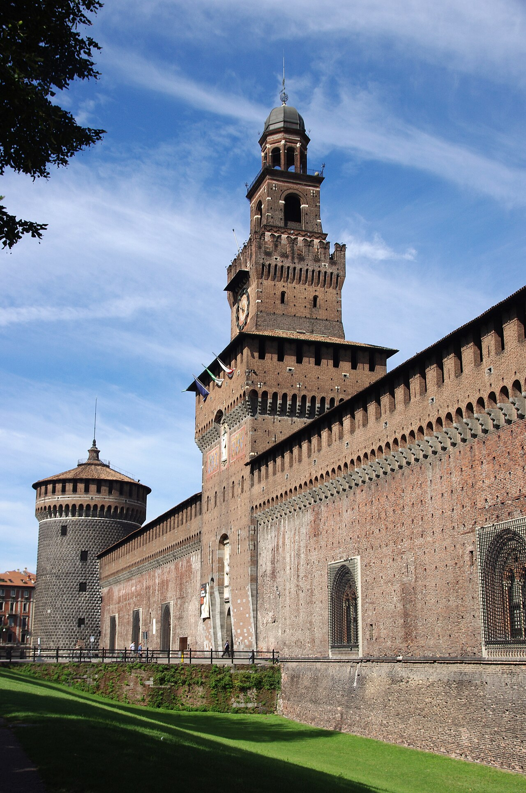
The Sforza Castle, built in the 15th century, is one of Milan's most important historical landmarks. This imposing red-brick fortress served as the palace of the Sforza dynasty, and Leonardo da Vinci himself contributed to the design of its fortifications. Inside, the castle museums house Michelangelo's final, unfinished sculpture — the Rondanini Pietà, a deeply moving work he was still carving just days before his death.
Behind the castle lies Parco Sempione, a welcome retreat during the hot August afternoons. The park is filled with shady trees, a lake, and cafes where you can enjoy an Italian-style leisurely break between sightseeing stops. The castle courtyards are free to explore, making it an ideal place to wander without a ticket.
Tickets: Courtyards free. Museum combo €5. Free entry every first and third Tuesday after 2pm.
▶The Last Supper 最后的晚餐
~45 min-1 hour~€1515 min from Castello
Leonardo da Vinci's Last Supper is one of the world's most famous paintings, created between 1495 and 1498 on the refectory wall of the Santa Maria delle Grazie convent. The monumental fresco captures the dramatic moment when Jesus reveals that one of his twelve apostles will betray him. Each figure's expression and gesture conveys a different emotional reaction, creating a scene of extraordinary psychological depth.
Tickets must be booked weeks or even months in advance — only small groups are admitted at a time, with each visit limited to just 15 minutes. Pay close attention to how Leonardo used perspective to create an astonishing sense of spatial depth, making the painted room appear to extend the real refectory. This is a truly once-in-a-lifetime experience that justifies the advance planning required.
Tickets: ~€15. Book at vivaticket.com. Sells out months ahead — book as early as possible. 15-min viewing slots only.
▶San Maurizio al Monastero Maggiore 圣莫里齐奥教堂
~30-45 minFree5 min from Castello
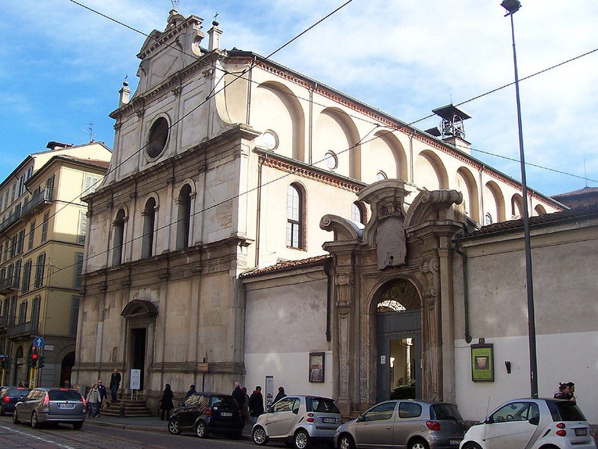
Often called "Milan's Sistine Chapel," this 16th-century church is one of Italy's most underrated treasures. Nearly every inch of its interior walls is covered with vibrant Renaissance frescoes depicting biblical scenes, saints, and intricate decorative patterns. Unlike the tourist-packed Duomo, San Maurizio is usually wonderfully quiet and contemplative.
Entry is free and there is rarely any queue, making it a perfect hidden gem to visit between the main sights. The quality of the artwork rivals many famous museums, yet most visitors to Milan walk right past it. The church is divided into two sections — don't miss the rear hall behind the dividing wall, which contains equally stunning frescoes.
The Brera Art Gallery is one of Italy's most important art museums, housing masterworks by Raphael, Caravaggio, Bellini, Tintoretto, and many others. Set within a beautiful palazzo in the bohemian Brera district, the gallery offers a world-class collection without the overwhelming crowds of Florence's Uffizi. Hidden within the complex is a little-known botanical garden (Orto Botanico), a tranquil oasis in the heart of the city.
Hidden just steps from the Duomo on Piazza Santo Stefano, San Bernardino alle Ossa is one of Milan's most macabre and unforgettable sights. The small ossuary chapel, reached through a narrow corridor to the right of the church entrance, is entirely decorated with human skulls and bones arranged in ornate patterns across the walls, pillars, and doorways. The vault above is adorned with frescoes by Sebastiano Ricci dating from 1695.
The ossuary dates back to 1210, when an adjacent cemetery ran out of space and a room was built to house the remains. In 1728, King John V of Portugal visited and was so impressed that he commissioned an identical chapel in Évora. Despite its proximity to the Duomo, the church sees relatively few visitors — making it a hauntingly atmospheric experience without the crowds.
Tickets: Free (small donation appreciated). Open Mon-Fri 8am-12pm & 1:30-6pm, weekends 9:30am-12:30pm. Photography allowed (no flash).
▶Memoriale della Shoah (Binario 21) 米兰火车站21号站台
~45-60 min~€10Milano Centrale Station
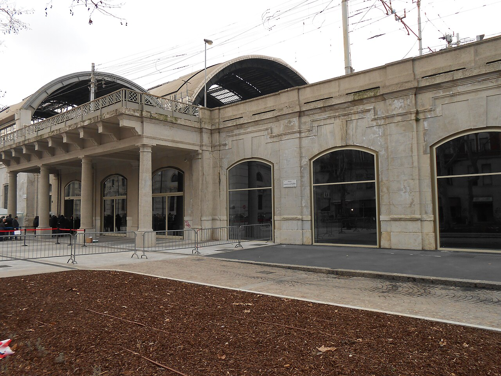
Beneath Milan's grand Central Station lies one of Europe's most moving Holocaust memorials. Platform 21 (Binario 21) was the secret underground platform from which Jewish prisoners, political dissidents, and other persecuted people were loaded into cattle cars and deported to Auschwitz and other concentration camps. Between 1943 and 1945, twenty trains carrying up to 1,200 people departed from this hidden platform.
Opened in 2013, the memorial preserves two original freight cars used in the deportations. A wall projects the names of the deported, and the stark, industrial space — with its exposed concrete and rail tracks — creates an atmosphere of profound solemnity. Audio guides are available in multiple languages. A deeply important and sobering experience.
Tickets: €10 (students/over 65: €5). Book at memorialeshoah.it. Guided tours available (~45-60 min).
Venice 威尼斯
▶Rialto Bridge & Market 里亚托桥与市场
~45 min-1 hourFree20 min from station, Venice
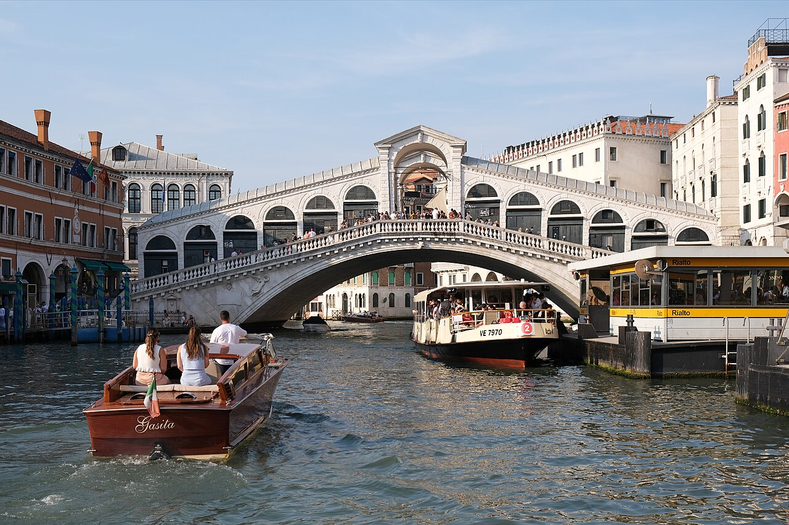
The Rialto Bridge is the oldest and most magnificent bridge spanning Venice's Grand Canal, built in 1591. Two rows of shops line its span selling jewellery and souvenirs, while the central arcade at the top provides stunning views of the Grand Canal in both directions, with gondolas and water taxis gliding below.
The adjacent Rialto Market has been in operation since 1097. In the early morning, fishermen display fresh Adriatic seafood on their stalls. Arrive early to beat the crowds and experience the most authentic side of Venetian daily life — the fish market (Pescheria) is particularly photogenic and closes by midday.
~1-1.5 hoursFree (€3 skip line)10 min from Rialto, Venice
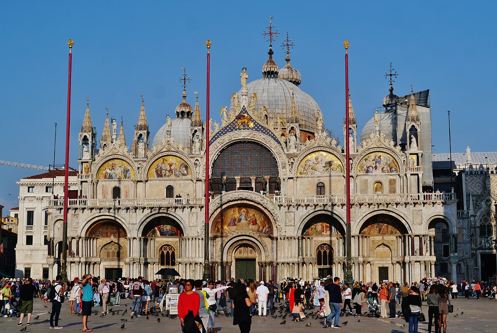
St. Mark's Basilica is the supreme example of Byzantine architecture in the Western world. The interior is covered with over 8,000 square metres of golden mosaics depicting biblical scenes, shimmering mysteriously in the candlelight — earning it the nickname "the Golden Church." The mosaics span from the 12th to the 16th century, making the basilica a living timeline of Venetian art.
The Pala d'Oro altarpiece behind the main altar is encrusted with thousands of precious gems. For the best views, pay the small extra fee to visit the upper-level loggia (Loggia dei Cavalli), which offers a panoramic overlook of St. Mark's Square. Note: shoulders and knees must be covered for entry. Pay €3 online for a skip-the-line reservation to avoid the often hour-long queues.
The Doge's Palace was the seat of power for the Venetian Republic for over a thousand years. Its Gothic exterior, with distinctive pink-and-white marble and delicate pointed arches, is one of Venice's most recognisable landmarks. Inside, the Great Council Hall contains Tintoretto's enormous painting "Paradise" on its ceiling — one of the largest oil paintings in the world.
Walking across the famous Bridge of Sighs connects the ornate palace to the grim prison cells beyond — legend says that prisoners, glimpsing Venice's beauty through the bridge's small windows for the last time, would let out a sigh of despair. The Secret Itineraries tour (book separately) reveals hidden rooms and Casanova's escape route.
穿过著名的叹息桥（Bridge of Sighs），你将从华丽的宫殿进入阴暗的监狱——据说囚犯们通过桥上的小窗最后一次望向威尼斯美景时，都会发出一声叹息。
Tickets: ~€30. Book at visitmuve.it. Combo with other civic museums available.
▶Grand Canal 大运河
~30-45 min€7.50 / €25 day passWater experience, Venice
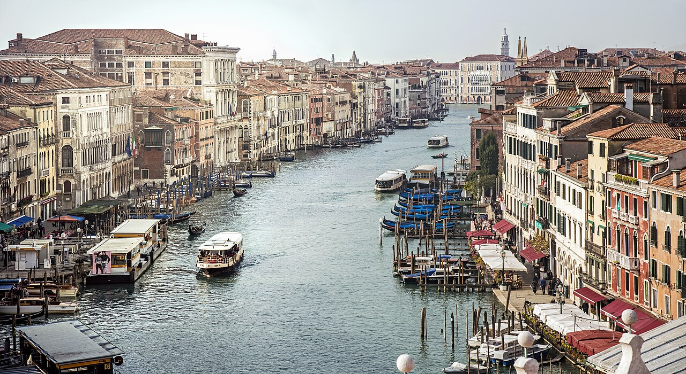
The Grand Canal is Venice's "main street," a 3.8-kilometre waterway winding through the city in a reverse S-shape. Along its banks stand over 170 palaces and churches spanning from the 12th to the 18th century, their Gothic, Renaissance, and Baroque facades reflected in the shimmering water below.
Taking the Line 1 vaporetto from the train station to St. Mark's Square is the best way to see the entire Grand Canal — a 45-minute journey that functions as the world's most beautiful bus ride. For a more romantic experience, a gondola ride at dusk costs approximately €80-100 for 30 minutes. Sit on the right side of the vaporetto for the best photo opportunities.
Tickets: Single vaporetto €7.50. Day pass €25 (best value if riding 4+ times). Buy at ACTV kiosks or ACTV app.
▶Burano Island 布拉诺岛
~1.5-2 hoursIncluded in day pass40 min vaporetto from San Marco
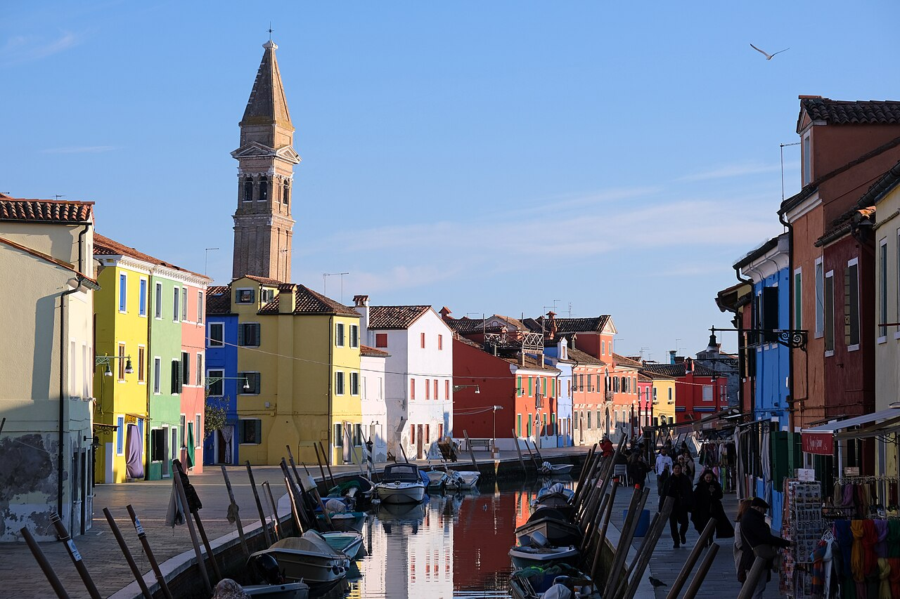
Burano is famous worldwide for its brightly coloured fishermen's houses and exquisite lace-making tradition. Each house is painted a different vivid colour — legend says this was originally so fishermen could identify their homes through the fog. The island is far quieter than the main island of Venice and a photographer's paradise with every alleyway offering a postcard-perfect composition.
This 15th-century palazzo is famous for its extraordinary external spiral staircase — "Bovolo" means "snail" in the Venetian dialect. Climbing the 80 steps to the rooftop terrace rewards you with a 360-degree panorama of Venice's terracotta rooftops and bell towers. It's a hidden gem that few tourists find, yet offers some of the best views in Venice.
Tickets: ~€8. Buy at the door. No advance booking needed.
▶St. Mark’s Campanile 圣马可钟楼
~30 min~€10St. Mark’s Square, Venice
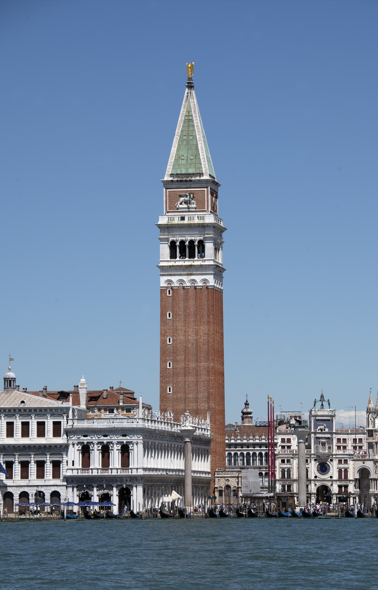
Standing 98.6 metres tall, St. Mark's Campanile is the tallest structure in Venice and one of the most recognisable symbols of the city. Originally built in the 12th century as a lighthouse, the current tower is actually a faithful reconstruction completed in 1912 after the original dramatically collapsed in 1902. From its summit you can see the labyrinth of canals, the red-tiled rooftops, the lagoon islands, and on clear days even the distant Alps.
The bell tower holds five historic bells, each with a different purpose in Venetian civic life. In 1609, Galileo Galilei famously used the tower to demonstrate his telescope to the Doge. An elevator takes you to the top (or climb 323 steps), where the panoramic views of Venice from above are unmatched. Lines can be long in August — consider booking a skip-the-line ticket.
Tickets: ~€10 (skip-the-line €18.50). Open daily 10am-5:40pm. Elevator to the top. Free for children under 6.
▶Libreria Acqua Alta 沉船书店
~20-30 minFree10 min from St. Mark’s, Venice
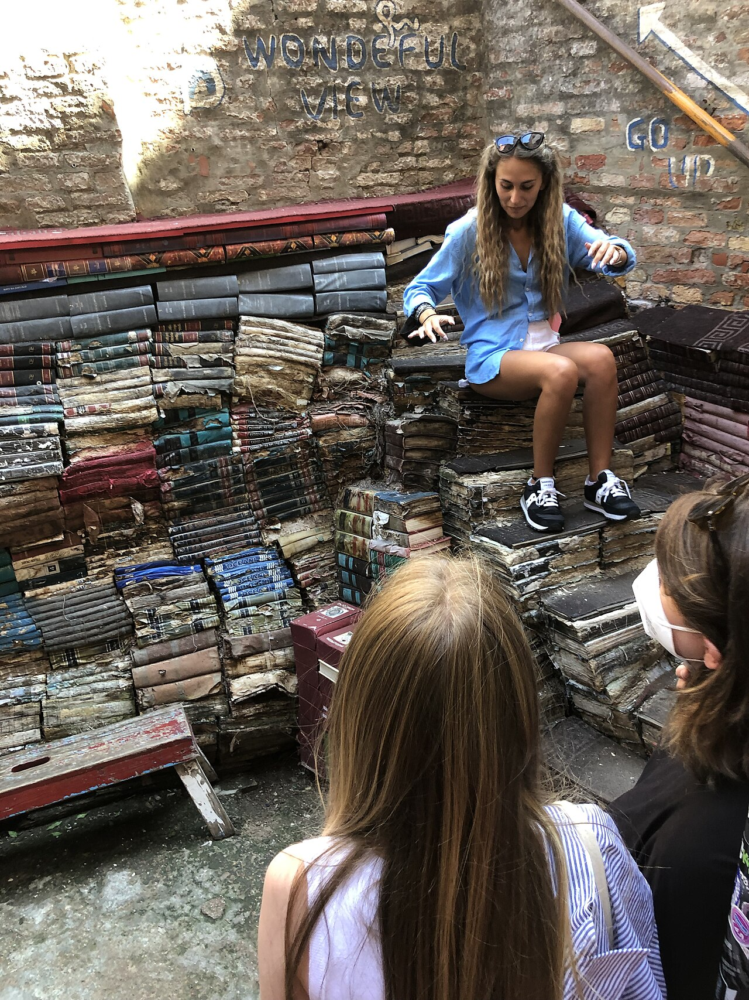
Libreria Acqua Alta (“Bookshop of High Water”) is one of the most whimsical and photogenic spots in Venice. Opened in 2002, this eccentric bookshop stores its books in bathtubs, boats, and even a full-sized gondola to protect them from Venice's periodic flooding. The “fire exit” leads directly into a canal, and resident cats lounge among the towering stacks of books, adding to the fairy-tale atmosphere.
The shop's most famous feature is the staircase built entirely from damaged books — one of the most photographed spots in Venice. Browse an eclectic mix of new and vintage books about Venetian art, history, novels, and comics. Visit early morning or late afternoon on weekdays to avoid the crowds. A delightful, free-to-enter detour from the main tourist trail.
Tickets: Free entry. Open daily 9am-7:15pm. Located at Calle Longa Santa Maria Formosa 5176b. Photography welcome.
Florence 佛罗伦萨
▶Piazza del Duomo (Florence) 佛罗伦萨大教堂广场
~2-3 hours~€30 comboCentro Storico, Florence
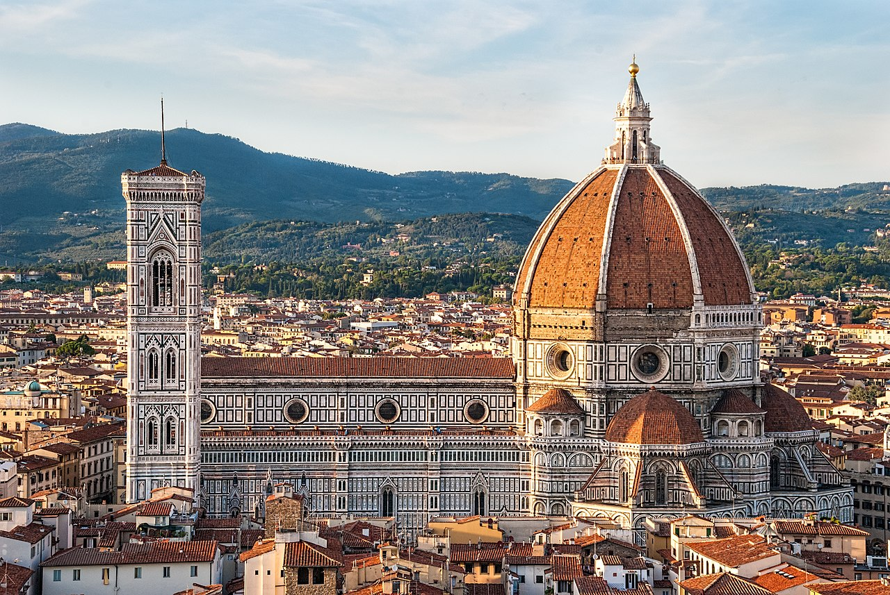
Florence's Cathedral (Santa Maria del Fiore) is the defining masterpiece of Renaissance architecture. Brunelleschi's dome, measuring 45 metres in diameter, was the largest brick dome ever built when completed in 1436, and its engineering still astonishes experts today. The cathedral's exterior is clad in white, green, and pink marble, glittering like an enormous jewel under the Tuscan sun.
Climbing the 463 steps to the dome's summit is Florence's most unforgettable experience. You'll pass through the narrow passage between the dome's inner and outer shells, getting an extraordinary close-up view of Vasari's vast fresco "The Last Judgement," before emerging at the top to gaze across a sea of red-tiled rooftops and the rolling Tuscan hills beyond. Timed dome climb slots must be pre-booked online.
Tickets: Combo ~€30 (dome + baptistery + bell tower + museum). Book timed dome climb at duomo.firenze.it. Cathedral entry is free.
▶Uffizi Gallery 乌菲兹美术馆
~2-3 hours~€258 min from Duomo, Florence
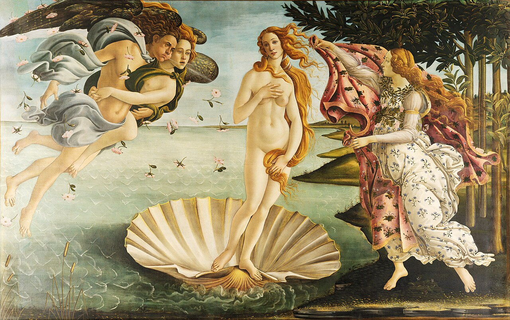
The Uffizi Gallery is one of the world's most important art museums, housing the greatest collection of Italian Renaissance paintings anywhere on Earth. Botticelli's "The Birth of Venus" and "Primavera," Leonardo da Vinci's "Annunciation," and masterworks by Raphael, Caravaggio, and Titian are all here, displayed in elegant rooms overlooking the Arno River.
Visit at opening time (8:15am) or after 5pm to avoid the worst crowds. In August, booking timed-entry tickets online in advance is essential — walk-up queues can stretch for hours in the summer heat. Allow at least 2 hours; art enthusiasts could easily spend a full day. The rooftop cafe offers lovely views over Piazza della Signoria.
Tickets: ~€25. Book timed entry at uffizi.it. Audio guide €6 extra.
▶Ponte Vecchio 老桥
~20-30 minFree3 min from Uffizi, Florence
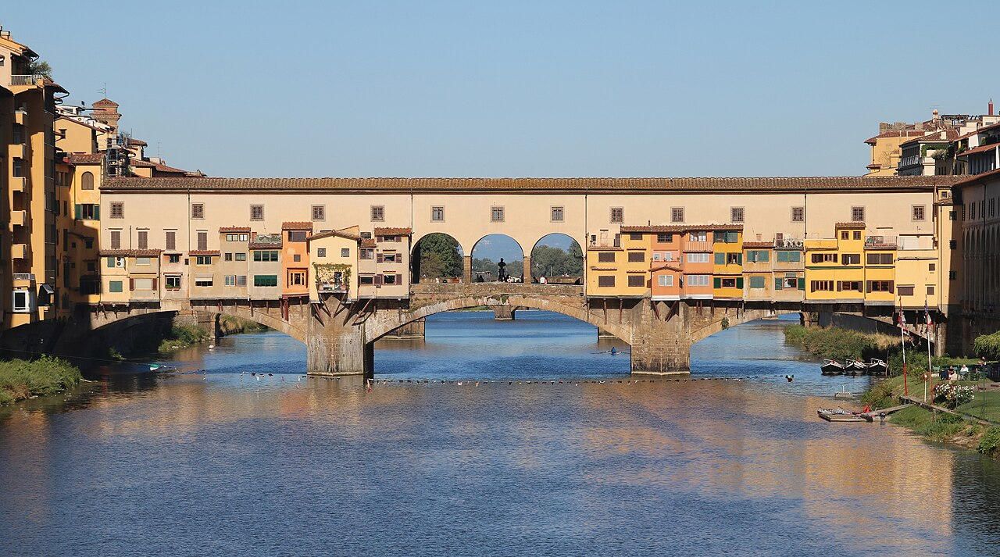
Built in 1345, the Ponte Vecchio is Florence's oldest bridge and the only one spared from destruction by the retreating German army in World War II. Both sides of the bridge are lined with gold and silver jewellery shops, a tradition dating back to the 16th century when the Medici family ordered the original butchers and tanners to be replaced with more refined trades.
At dusk, standing on the bridge or viewing it from the opposite bank is one of Florence's most iconic experiences, as the golden sunset light transforms the Arno River into a mirror. Above the shops runs the Vasari Corridor — the Medici family's private elevated passageway from the Palazzo Vecchio to the Pitti Palace across the river.
The Accademia Gallery is world-famous as the home of Michelangelo's original David, a 5.17-metre marble masterpiece widely regarded as the pinnacle of Western sculpture. Carved from a single block of Carrara marble between 1501 and 1504, the statue's anatomical precision and emotional intensity are breathtaking when seen in person. The gallery also houses four unfinished "Prisoner" sculptures by Michelangelo, which reveal the mesmerising process of a figure being "freed" from raw stone.
This panoramic terrace offers the most spectacular view in all of Florence. The Duomo's dome, the Palazzo Vecchio tower, the bridges over the Arno — the entire city unfolds at your feet like a living Renaissance painting. Sunset is the ideal time to visit, when the golden light turns the terracotta rooftops to amber and the sky blazes behind the Tuscan hills.
The Pitti Palace is Florence's largest palace and former residence of the Medici grand dukes. Behind it lie the Boboli Gardens, a masterpiece of Italian landscape design featuring fountains, sculptures, an orange grove, and hilltop terraces with sweeping city views. On hot August afternoons, the shaded garden paths offer a welcome escape from the heat and crowds of the city centre.
The Basilica di Santa Croce is the world's largest active Franciscan church, often called the “Pantheon of Florence” for housing the tombs of some of Italy's most illustrious figures: Michelangelo, Galileo, Machiavelli, and the composer Rossini, among nearly 300 burials. The church dates back to 1294 and was designed by Arnolfo di Cambio, the same architect behind Florence's cathedral.
Beyond the famous tombs, the church contains extraordinary frescoes by Giotto in the Bardi and Peruzzi chapels — among the most important works in the history of Western painting. The Pazzi Chapel by Brunelleschi, a masterpiece of early Renaissance architecture, and Donatello's gilded relief of the Annunciation are also highlights. The ticket includes the cloisters, museum, and crypt.
Tickets: ~€8. Book at santacroceopera.it. Free for children under 12 and Florence residents.
▶Il Porcellino 金猪喷泉
~10 minFree5 min from Ponte Vecchio, Florence
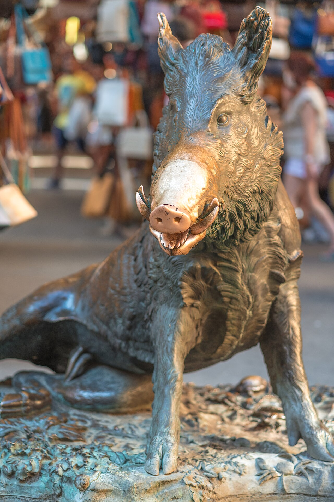
Il Porcellino (“The Little Pig”) is Florence's beloved bronze boar fountain, located at the Loggia del Mercato Nuovo between Piazza della Repubblica and the Ponte Vecchio. The original was sculpted by Baroque master Pietro Tacca around 1634, based on a Hellenistic marble original now in the Uffizi. The current statue is a 1998 copy; Tacca's bronze is preserved in the Museo Stefano Bardini.
Legend has it that rubbing the boar's snout ensures your return to Florence — the nose has been polished to a brilliant golden sheen by millions of hopeful visitors. Place a coin in its jaws and let it fall through the grating below for extra good luck. The surrounding Mercato Nuovo is a lively market selling leather goods, scarves, and souvenirs. Visit in the evening for fewer crowds and better photos.
~2-3 hoursTower ~€20, Cathedral free20 min from Pisa station
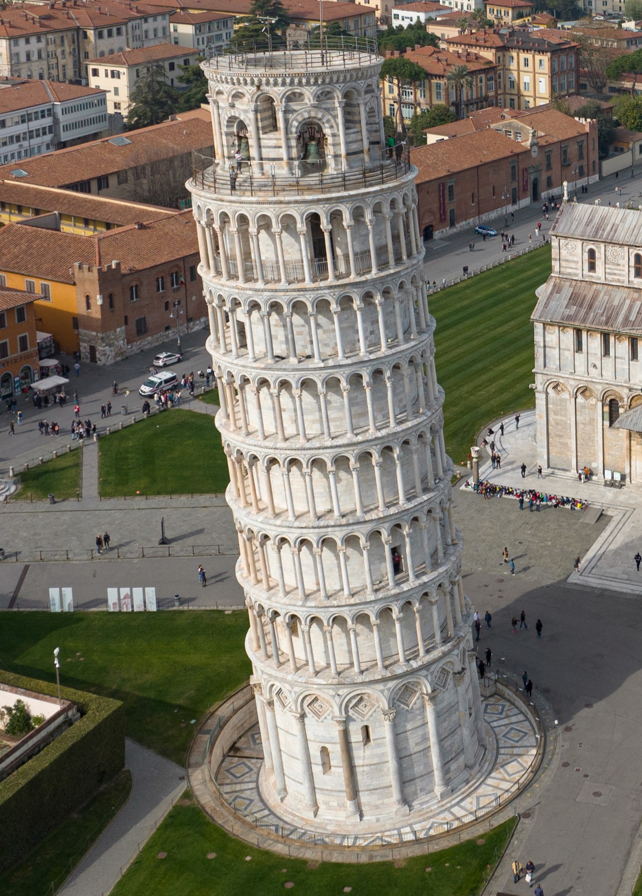
The Piazza dei Miracoli (Square of Miracles) is a UNESCO World Heritage Site containing Pisa's three most important buildings: the Leaning Tower, the Cathedral, and the Baptistery. The tower, begun in 1173, started leaning during construction due to soft ground on one side. Climbing the 294 steps to the top is a uniquely disorienting experience — the lean is more dramatic than photos suggest.
The Cathedral is a Romanesque masterpiece in its own right. The Baptistery is famous for its remarkable acoustics — staff demonstrate the echo effect at regular intervals, producing sounds that seem almost supernatural. Don't forget to take the classic "pushing the tower" photo from the grass opposite. The tower has timed entry slots that sell out — book online in advance.
Tickets: Leaning Tower ~€20 (timed entry). Cathedral free. Baptistery ~€7. Book tower at opapisa.it.
▶Piazza dei Cavalieri 骑士广场
~20-30 minFree10 min from Miracoli, Pisa
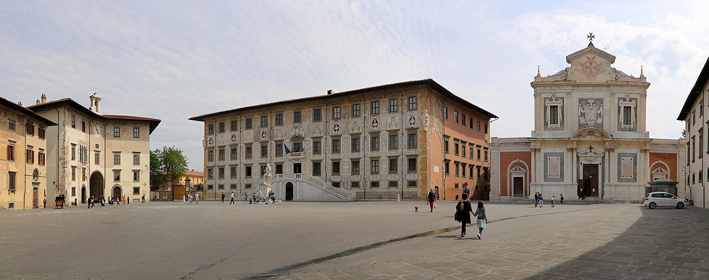
The Piazza dei Cavalieri was the political heart of medieval Pisa and is now home to the prestigious Scuola Normale Superiore. The Palazzo della Carovana's facade is covered with elaborate sgraffito decorations designed by Vasari, showing Pisa's historical depth beyond just the famous leaning tower. It's a quieter, more authentic glimpse of the city.
The Colosseum, built between AD 72 and 80, is one of the greatest architectural achievements of the ancient Roman Empire. This colossal amphitheatre could hold between 50,000 and 80,000 spectators who gathered to watch gladiatorial combats, wild beast hunts, and mock naval battles. Despite nearly two millennia of erosion, earthquakes, and stone-robbing, the remaining structure still radiates awe-inspiring power.
Arrive early at 8:30am at the Palatine Hill ticket office (almost no queue) and visit the Palatine and Forum first, ending at the Colosseum. Inside, you can see the underground passages — the system of lifts and trapdoors that launched animals and gladiators into the arena above. In August, booking skip-the-line combo tickets online is essential.
Tickets: Combo ~€18 (Colosseum + Forum + Palatine). Book at coopculture.it. Valid 2 days.
▶Roman Forum & Palatine Hill 古罗马广场与帕拉丁山
~1.5-2 hoursIncluded in combo3 min from Colosseum, Rome
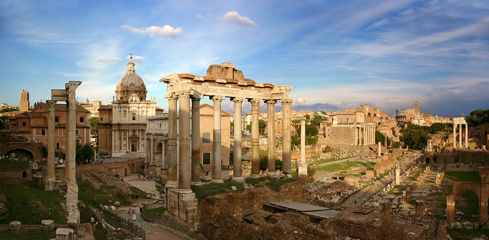
The Roman Forum was once the political, religious, and commercial heart of the Roman Empire. Walking among ruins over 2,000 years old — the Senate house where Caesar was assassinated, the Temple of Vespasian, the Arch of Titus — feels like stepping into the very centre of history. The scale and grandeur of even the ruined structures hints at the extraordinary civilisation that built them.
The Palatine Hill, one of Rome's seven hills, is considered the birthplace of the city itself. The hilltop contains the ruins of emperors' palaces and is far quieter than the Colosseum below, with pine trees and gardens scattered among the imperial remains. On hot August days, the shade and relative tranquillity make it a welcome respite from the crowded streets.
Tickets: Included in Colosseum combo ticket (~€18). Enter via the Palatine Hill entrance on Via di San Gregorio for shorter queues.
▶Pantheon 万神殿
~30 min-1 hourFree30 min walk / 15 min bus from Vatican
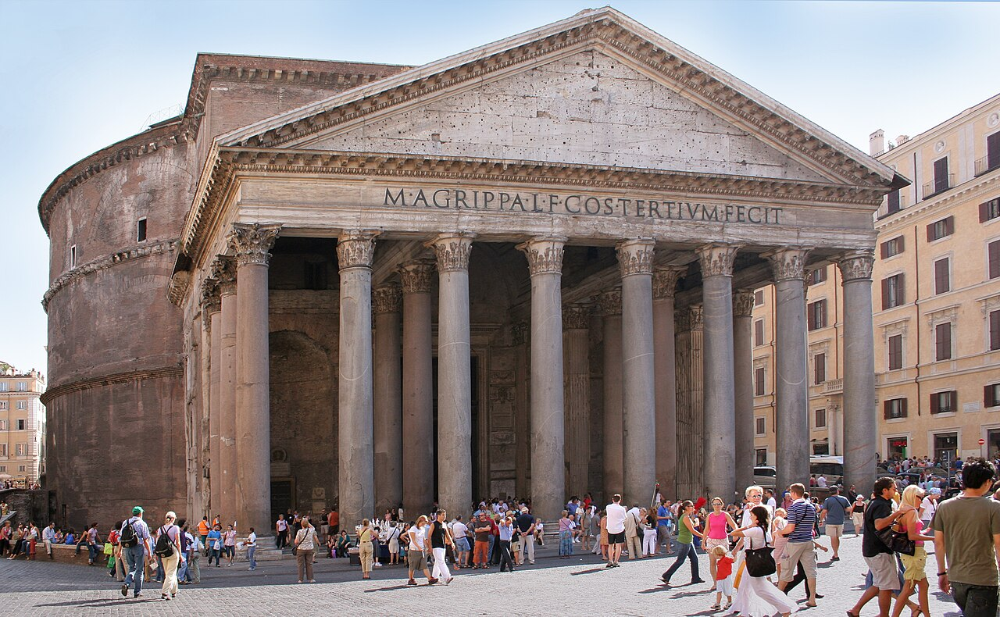
Built around AD 125, the Pantheon is the best-preserved building from ancient Rome. Its dome, 43.3 metres in diameter, features a 9-metre circular opening (the oculus) at its centre, through which a beam of sunlight enters and slowly rotates across the interior as the sun moves — the effect is most dramatic at noon. Nearly two thousand years after construction, it remains the world's largest unreinforced concrete dome.
The temple houses the tombs of the painter Raphael and several Italian kings. When it rains, water falls through the oculus onto the floor, where a drainage system designed two millennia ago channels it away — still working perfectly today. Entry is free, and the building's extraordinary engineering makes it one of the most impressive sights in Rome.
The Trevi Fountain (Fontana di Trevi) is Rome's largest and most famous Baroque fountain. Legend has it that tossing a coin over your right shoulder with your left hand into the water guarantees a return to Rome. Around €3,000 in coins are thrown into the fountain each day, collected nightly and donated to charity.
The Spanish Steps, with their 135 elegant marble steps, have been one of Rome's most fashionable gathering spots since the 18th century. Visit both early morning or late evening to avoid the massive daytime crowds — the fountain is beautifully illuminated at night, creating a magical atmosphere that's far more enjoyable without the crush of tourists.
许愿池（Fontana di Trevi）是罗马最大也是最著名的巴洛克喷泉。传说背对喷泉用右手从左肩抛一枚硬币入池，就能确保重返罗马。每天约有3000欧元的硬币被投入池中。
西班牙阶梯共135级台阶，是罗马最优雅的集合地点之一。建议清晨或深夜前往——白天人山人海。
▶Galleria Borghese 博尔盖塞美术馆
~2 hours (fixed slot)~€1515 min from Spanish Steps, Rome
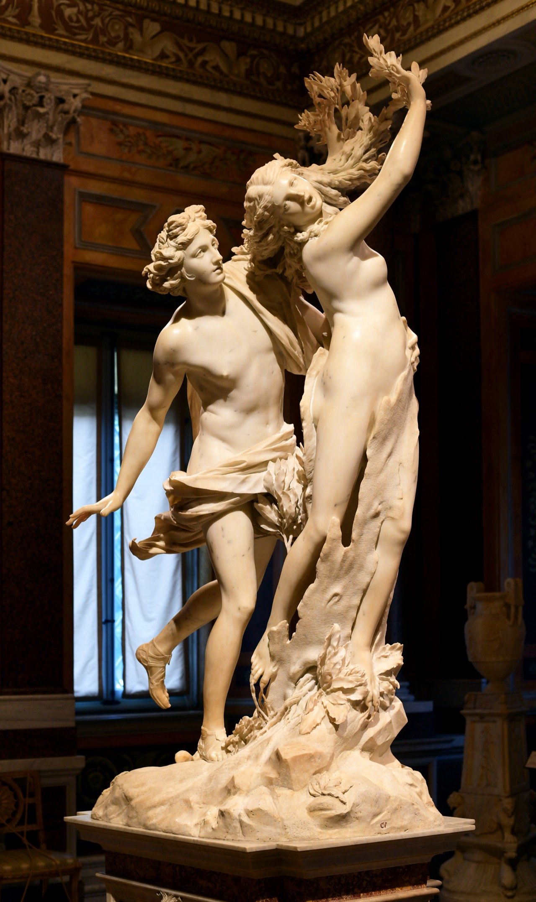
The Borghese Gallery houses what may be the most exquisite collection of Bernini sculptures anywhere in the world. His "Apollo and Daphne" is a staggering achievement — marble transformed into what appears to be soft flesh and fluttering leaves. Each time slot admits only 360 visitors, creating an intimate, uncrowded viewing experience that's rare in Rome. Reservations are mandatory and must be booked online in advance.
Tickets: ~€15. Must pre-book at galleriaborghese.it. Fixed 2-hour slots. No walk-ups.
▶Trastevere 特拉斯提弗列
~1.5-2 hoursFree20 min from Pantheon, Rome
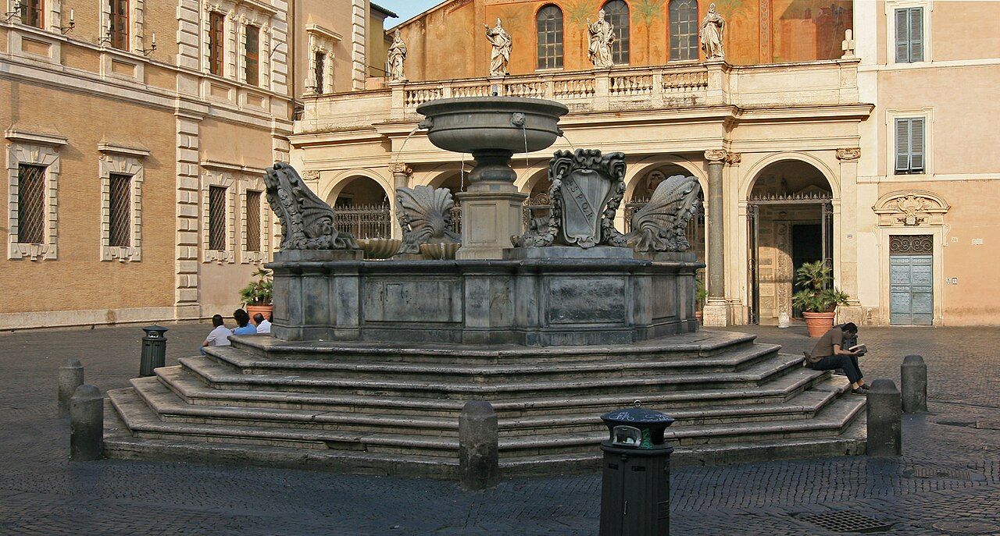
Trastevere is Rome's most charming old neighbourhood, a labyrinth of narrow cobblestone alleys draped in ivy and wisteria. This is where Romans themselves go for dinner — the trattorias here serve some of the city's most authentic cuisine. The Basilica of Santa Maria in Trastevere is one of Rome's oldest churches, with golden mosaics rivalling those of St. Mark's in Venice.
The Aventine Hill holds two must-visit spots: the Giardino degli Aranci (Orange Garden), one of Rome's finest sunset viewpoints, and the Knights of Malta Keyhole (Buco della Serratura). Through the tiny keyhole of the Priory's gate, you'll see a perfectly framed garden-lined avenue leading to St. Peter's dome in the distance — one of Rome's most delightful hidden surprises.
阿文提诺山有两个必到之处：橘园（Giardino degli Aranci）是罗马最佳日落观赏点之一；马耳他骑士团的钥匙孔（Buco della Serratura）——透过大门小孔，你会看到一条由花园树篱完美框架的通道，尽头正是圣彼得大殿的穹顶。
▶Arch of Constantine 君士坦丁凯旋门
~15 minFreeNext to Colosseum, Rome
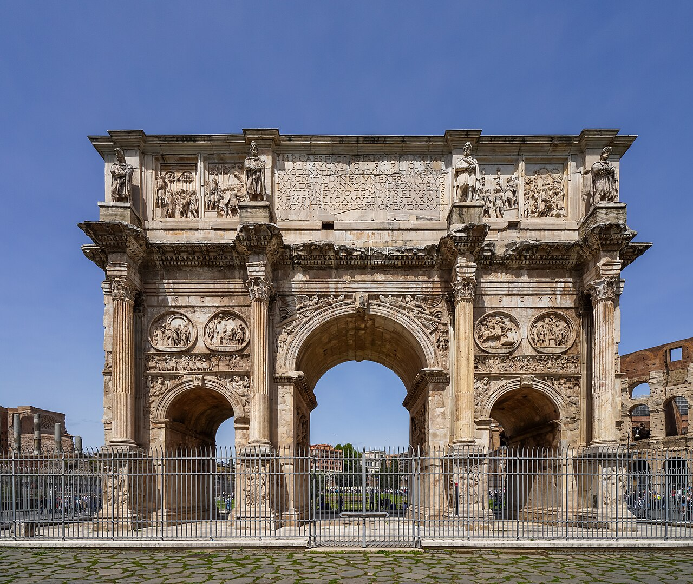
The Arch of Constantine is the largest and best-preserved Roman triumphal arch, standing 21 metres high and 25.9 metres wide. Erected between AD 312 and 315, it commemorates Emperor Constantine's victory over Maxentius at the Battle of the Milvian Bridge. The arch spans the Via Triumphalis, the ancient route taken by victorious generals entering Rome in triumphal procession.
Much of its sculptural decoration was reused from earlier monuments honouring Trajan, Hadrian, and Marcus Aurelius — with portrait heads replaced by Constantine's likeness. This recycling of imperial art makes the arch a fascinating gallery spanning three centuries of Roman sculpture. Located right beside the Colosseum, it's impossible to miss and free to view at any hour.
~15-20 minFree / donation10 min from Circus Maximus, Rome
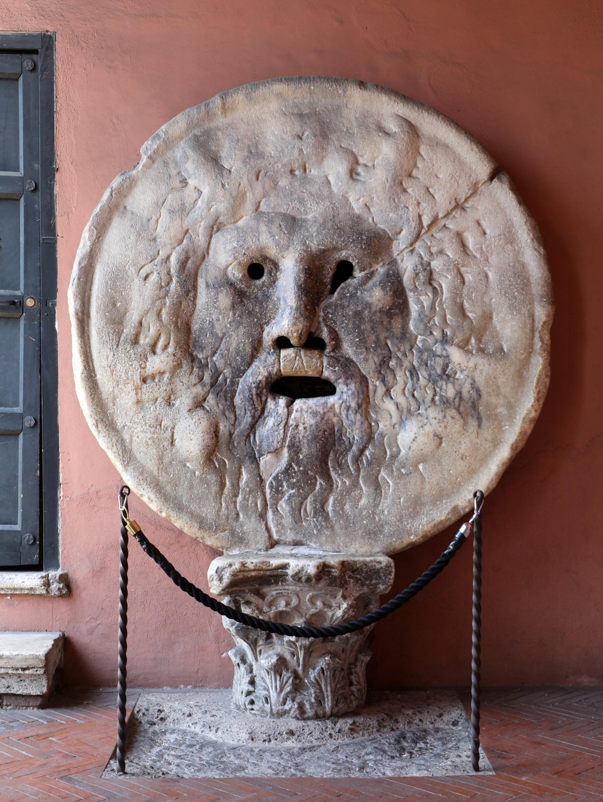
The Bocca della Verità (“Mouth of Truth”) is an ancient marble mask weighing 1,300 kg, set into the portico wall of the church of Santa Maria in Cosmedin. The massive tondo, 1.8 metres in diameter, probably depicts the sea god Oceanus and may have originally served as a Roman sewer cover. According to medieval legend, it will bite off the hand of anyone who tells a lie while their hand is in its mouth.
Made famous by the 1953 film “Roman Holiday” starring Audrey Hepburn and Gregory Peck, it remains one of Rome's most beloved photo opportunities. The church of Santa Maria in Cosmedin is itself a beautiful 6th-century basilica worth exploring. Queues form during the day — arrive early morning for the shortest wait. A small donation is appreciated.
Tickets: Free / voluntary donation. Open daily 9:30am-5:50pm. 10 min walk from Circus Maximus, 15 min from Colosseum.
▶Castel Sant’Angelo 圣天使堡
~2-3 hours~€17Near Vatican, Rome
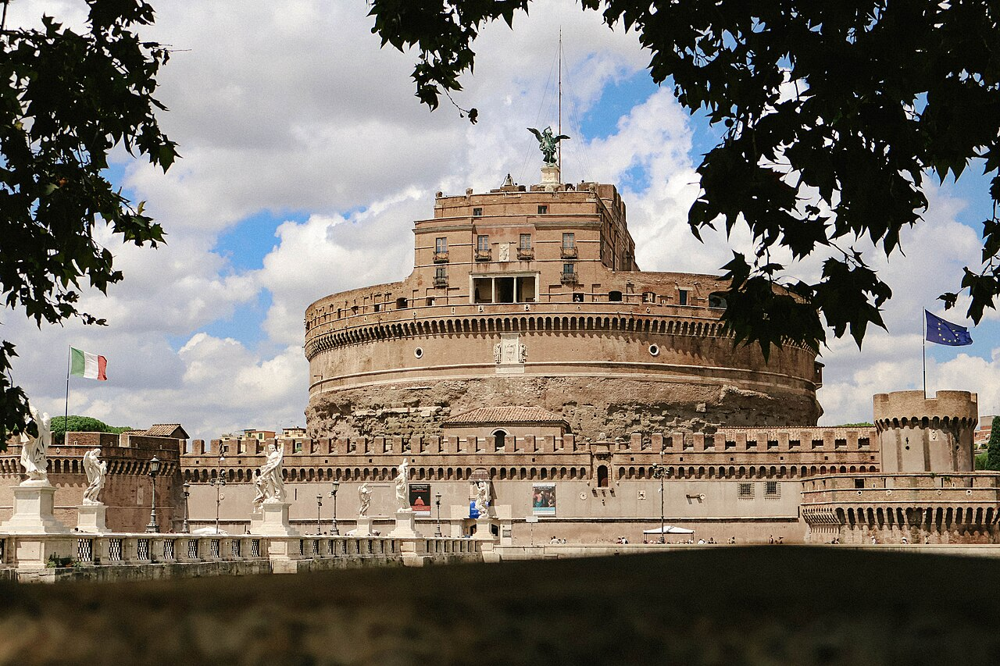
Castel Sant'Angelo has been a tomb, a fortress, a papal residence, a prison, and a museum across its nearly 2,000-year history. Originally built in AD 139 as the mausoleum of Emperor Hadrian, it earned its current name in the 6th century when Pope Gregory I reportedly saw the Archangel Michael sheathing his sword atop the structure, signalling the end of a devastating plague.
The castle is connected to the Vatican by the Passetto di Borgo, a secret elevated passageway that popes used to escape danger — most notably during the Sack of Rome in 1527. Inside, explore lavish papal apartments, military weaponry, a Renaissance courtyard, and a dungeon where prisoners once languished. The rooftop terrace, crowned by a bronze angel statue, offers one of Rome's finest panoramic views, especially at sunset.
城堡通过"博尔戈走廊"（Passetto di Borgo）与梵蒂冈相连——这是教皇们逃离危险时使用的秘密高架通道，1527年罗马之劫时最为著名。内部可探索奢华的教皇公寓、军事武器展、文艺复兴庭院和昔日囚犯的地牢。顶层露台矗立着青铜天使雕像，提供罗马最佳的全景视野之一，尤其是日落时分。
Tickets: ~€17. Open Tue-Sun 9am-7:30pm (last entry 6:30pm). Free first Sunday of each month. Free for under 18. castelsantangelo.org
▶Tempietto di Bramante 坦比埃多礼拜堂
~20-30 minFreeJaniculum Hill, Trastevere
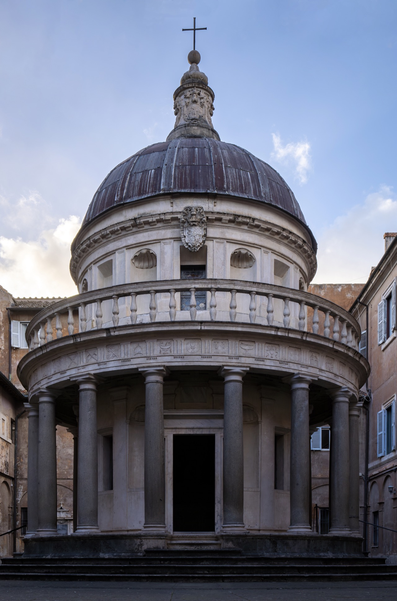
The Tempietto, designed by Donato Bramante around 1502, is considered one of the most harmonious buildings of the High Renaissance and a direct precursor to his design for St. Peter's Basilica. This tiny circular temple — only 4 metres in diameter — is surrounded by 16 granite Doric columns and crowned with a dome, achieving a perfection of proportion that has inspired architects for five centuries. It was built on the spot where, according to tradition, Saint Peter was crucified.
Commissioned by Ferdinand and Isabella of Spain, the Tempietto sits in a courtyard of the San Pietro in Montorio complex on the Janiculum Hill. Inside, a hole in the floor marks the legendary site of the cross. The building is now part of the Royal Academy of Spain. Even when the interior is closed, the exterior can be admired from the courtyard — a perfect detour when visiting nearby Trastevere.
Tickets: Free. Courtyard usually open Tue-Sun 10am-6pm. Interior access varies. Part of the Royal Academy of Spain complex.
▶Church of Sant’Ignazio 圣依纳爵教堂
~20-30 minFree5 min from Pantheon, Rome
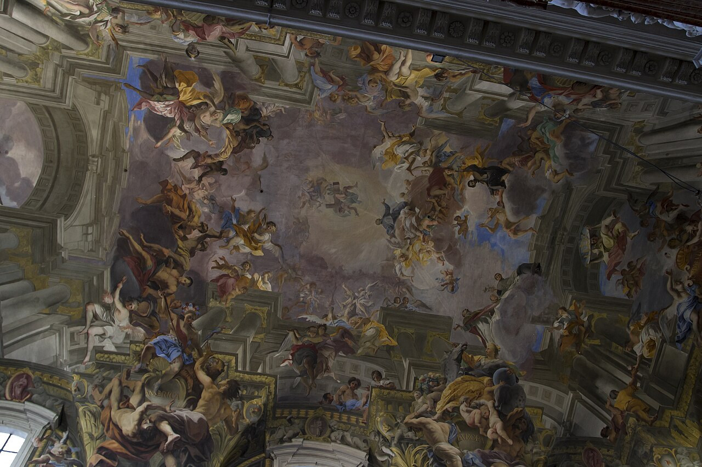
The Church of Sant'Ignazio contains one of the most astonishing artistic illusions in the world. Painted between 1685 and 1694 by Andrea Pozzo, the vast ceiling fresco depicting the Apotheosis of Saint Ignatius uses the technique of quadratura to create the illusion of soaring architectural structures and an open sky on a completely flat surface. Stand on the small marble disc in the nave floor, look up, and prepare to have your perception of reality shattered.
Equally remarkable is Pozzo's fake dome — when the planned dome couldn't be built, he painted a flat canvas that, from a specific viewpoint, is indistinguishable from a real three-dimensional dome. The illusion is so convincing that it has fooled visitors for over three centuries. This is one of Rome's most underrated treasures, just steps from the Pantheon and rarely crowded.
Tickets: Free. Open daily 7:30am-7pm. Look for the marble disc on the floor for the best viewing angle of both the ceiling and fake dome.
▶Baths of Caracalla 卡拉卡拉浴场遗迹
~1-2 hours~€1015 min from Colosseum, Rome
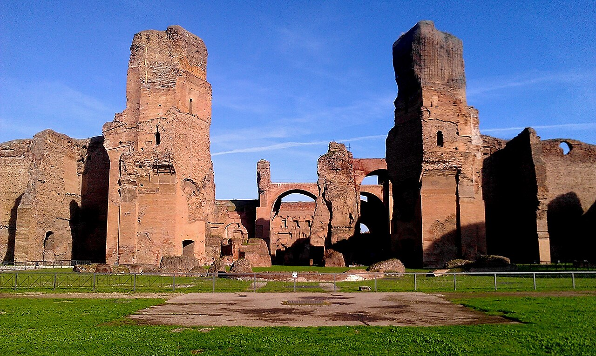
Built between AD 212 and 216 under Emperor Caracalla, these were once the largest and most luxurious public baths in Rome, spanning 11 hectares and accommodating over 2,500 bathers simultaneously. The towering ruins — some walls still rise to 30 metres — reveal the extraordinary scale of ancient Roman engineering: heated pools, gymnasiums, libraries, gardens, and mosaic-covered floors, all served by a sophisticated system of underground furnaces and aqueducts.
Unlike the Colosseum and Forum, the Baths of Caracalla are far less crowded, allowing you to wander freely through the massive brick-and-concrete halls and imagine the social life that once filled these spaces. An audio guide (available via smartphone) shows reconstructions of the original interiors. In summer, the ruins host spectacular open-air opera performances by the Teatro dell'Opera di Roma.
Tickets: ~€10 (family €36). Open daily 9am-6:30pm (varies by season). Audio guide available via smartphone app. coopculture.it
Vatican City 梵蒂冈
▶Vatican Museums & Sistine Chapel 梵蒂冈博物馆与西斯廷教堂
~3-4 hours~€17Metro from Monti ~20 min
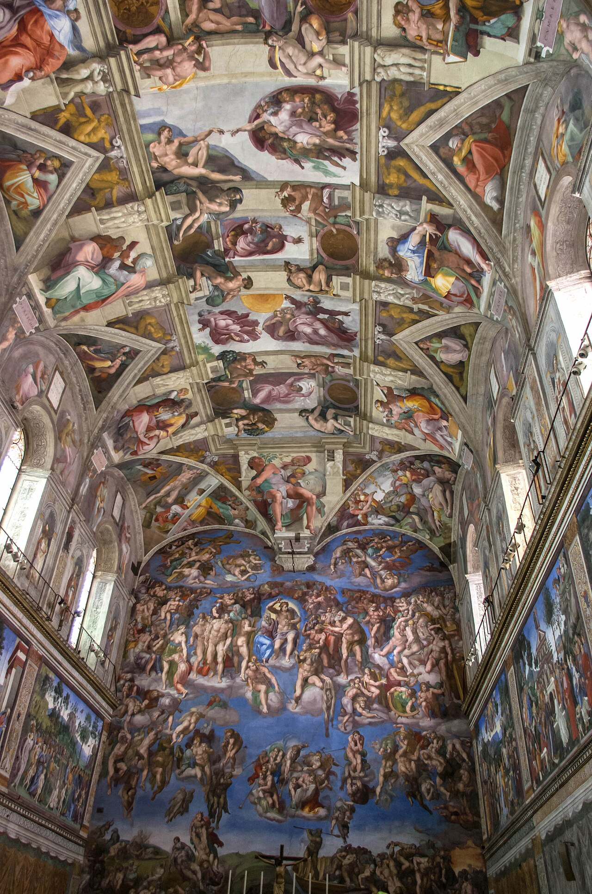
The Vatican Museums comprise one of the largest and most important art collections in the world, spanning thousands of years of human creativity. The climax of any visit is the Sistine Chapel — Michelangelo's ceiling frescoes depicting the Creation of Adam and the sweeping "Last Judgement" on the altar wall are among the supreme achievements of Western art, a vision of such power and beauty that it leaves visitors speechless.
Arrive at 8am when doors open, or visit after 3pm when crowds thin. The museums are closed on Sundays (except the last Sunday of each month, which is free but extremely crowded). The one-way route is approximately 7 kilometres long — wear comfortable shoes. Book skip-the-line tickets online to avoid the notoriously long queues that can stretch for hours in August heat.
Tickets: ~€17. Book skip-the-line at museivaticani.va. Audio guide €7 extra. Closed Sundays (except last Sunday, free).
▶St. Peter’s Basilica 圣彼得大教堂
~1-1.5 hoursFree (dome €8-10)5 min from Vatican Museums
St. Peter's Basilica is the largest church in the world and the holiest site in Catholicism. Among its most moving works is Michelangelo's Pietà, carved when he was just 25 years old, depicting the Virgin Mary cradling the body of Christ. Bernini's towering bronze baldachin, standing 29 metres tall over the papal altar, dominates the centre of the vast interior.
Arrive before 8am to beat the long security queues. Climbing to the dome (551 steps or elevator + 320 steps) rewards you with the most spectacular panoramic view in all of Rome, looking out across St. Peter's Square and the entire city. The basilica is free to enter, making it one of Rome's best-value experiences.